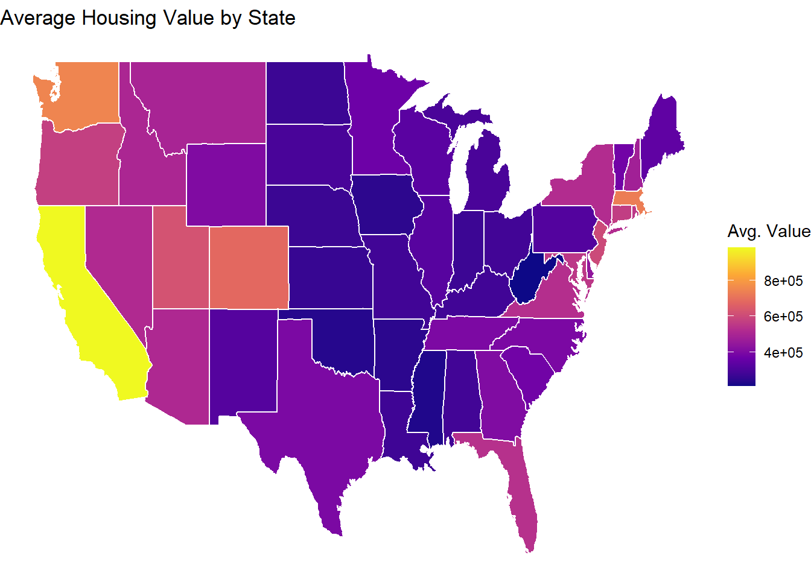

Here we provide a detailed analysis using more sophisticated statistics techniques.
This comes from the file analysis.qmd.
We describe here our detailed data analysis. This page will provide an overview of what questions you addressed, illustrations of relevant aspects of the data with tables and figures, and a statistical model that attempts to answer part of the question. You’ll also reflect on next steps and further analysis.
The audience for this page is someone like your class mates, so you can expect that they have some level of statistical and quantitative sophistication and understand ideas like linear and logistic regression, coefficients, confidence intervals, overfitting, etc.
While the exact number of figures and tables will vary and depend on your analysis, you should target around 5 to 6. An overly long analysis could lead to losing points. If you want you can link back to your blog posts or create separate pages with more details.
The style of this paper should aim to be that of an academic paper. I don’t expect this to be of publication quality but you should keep that aim in mind. Avoid using “we” too frequently, for example “We also found that …”. Describe your methodology and your findings but don’t describe your whole process.
Example of loading data
The code below shows an example of loading the loan refusal data set (which you should delete at some point).
library(tidyverse)
Warning: package 'tidyverse' was built under R version 4.3.3
Warning: package 'ggplot2' was built under R version 4.3.3
Warning: package 'tidyr' was built under R version 4.3.3
Warning: package 'readr' was built under R version 4.3.3
Warning: package 'purrr' was built under R version 4.3.3
Warning: package 'dplyr' was built under R version 4.3.3
Warning: package 'stringr' was built under R version 4.3.3
Warning: package 'forcats' was built under R version 4.3.3
Warning: package 'lubridate' was built under R version 4.3.3
── Attaching core tidyverse packages ──────────────────────── tidyverse 2.0.0 ──
✔ dplyr 1.1.4 ✔ readr 2.1.5
✔ forcats 1.0.0 ✔ stringr 1.5.1
✔ ggplot2 3.5.1 ✔ tibble 3.2.1
✔ lubridate 1.9.4 ✔ tidyr 1.3.1
✔ purrr 1.0.2
── Conflicts ────────────────────────────────────────── tidyverse_conflicts() ──
✖ dplyr::filter() masks stats::filter()
✖ dplyr::lag() masks stats::lag()
ℹ Use the conflicted package (<http://conflicted.r-lib.org/>) to force all conflicts to become errors
data <-read_rds(here::here("dataset/loan_refusal_clean.rds"))
Note on Attribution
In general, you should try to provide links to relevant resources, especially those that helped you. You don’t have to link to every StackOverflow post you used but if there are explainers on aspects of the data or specific models that you found helpful, try to link to those. Also, try to link to other sources that might support (or refute) your analysis. These can just be regular hyperlinks. You don’t need a formal citation.
If you are directly quoting from a source, please make that clear. You can show long quotes using > like this
> To be or not to be.
To be or not to be.
Rubric: On this page
You will
Introduce what motivates your Data Analysis (DA)
Which variables and relationships are you most interested in?
What questions are you interested in answering?
Provide context for the rest of the page. This will include figures/tables that illustrate aspects of the data of your question.
Modeling and Inference
The page will include some kind of formal statistical model. This could be a linear regression, logistic regression, or another modeling framework.
Explain the ideas and techniques you used to choose the predictors for your model. (Think about including interaction terms and other transformations of your variables.)
Describe the results of your modelling and make sure to give a sense of the uncertainty in your estimates and conclusions.
Explain the flaws and limitations of your analysis
Are there some assumptions that you needed to make that might not hold? Is there other data that would help to answer your questions?
Clarity Figures
Are your figures/tables/results easy to read, informative, without problems like overplotting, hard-to-read labels, etc?
Each figure should provide a key insight. Too many figures or other data summaries can detract from this. (While not a hard limit, around 5 total figures is probably a good target.)
Default lm output and plots are typically not acceptable.
Clarity of Explanations
How well do you explain each figure/result?
Do you provide interpretations that suggest further analysis or explanations for observed phenomenon?
Organization and cleanliness.
Make sure to remove excessive warnings, hide all code, organize with sections or multiple pages, use bullets, etc.
This page should be self-contained, i.e. provide a description of the relevant data.
Analysis
Motivation
The main purpose of the study is to examine the racial disparities in land ownership. The importance of distinguishing between urban and rural residential properties provides insight for analyzing ownership patterns, housing distribution, and land usage across different demographic groups. Historically, the American segregational economic policy has confined minority groups into urban areas, limiting their ability to acquire larger sets of land. By comparing the distribution between land and characteristics of homeownership, the result can help to identify the factors that are major contributors to generational wealth, therefore enhancing the understanding and influence of the racial wealth gap.
Urban vs. Rural Housing Value
The boxplot below illustrates housing values across racial groups, separated by urban and rural locations. It reveals that Asian households living in urban areas tend to occupy the highest-value homes, whereas American Indian and Black homeowners have more limited value ranges, especially in rural settings. This reinforces how geography and race intersect to shape home equity.
Research Questions
How does homeownership and racial demographics interact with housing prices?
Does the association between housing quality and rent price vary by racial differences in neighborhood?
How does homeownership and racial demographics interact with housing prices?
Overview
The stacked-share bar chart shows, for each race category, the percentage distributed of homes owned across all three house value tiers (High, Medium, and Low). Because every bar sums to 100%, the focus is on how housing-wealth mixes differ within the homeowner population of each racial group.
Interaction between Homeownership, Race, and Housing Prices
Homeownership does not reflect racial equity. Asian homeowners are concentrated in high-value homes while Black and American-Indian homeowners are clustered in the lower-value segments, reflecting the racial wealth gap.
Affordability Burden by Race
To further investigate how home value relates to income, the following boxplot shows the affordability ratio—calculated as housing value divided by household income—by race. Interestingly, although Asian households appear to own more high-value homes, they also bear the highest affordability burden, with a median ratio of 3.82. In contrast, groups such as White and American Indian households show lower ratios, reflecting different cost burdens even amid price differences.

Overall Analysis
Within the homeowner population, the distribution of house values is uneven across racial categories. Asian sub-groups (Chinese, Japanese, Other Asian/Pacific Islander) concentrate most heavily in the high-value tier, whereas Black and American-Indian homeowners show larger proportions in medium and low tiers. Whites and the “Other Race” and “NA” categories sit in between, with roughly half of their homes in the high-value range. Thus, the chart depicts a clear range in housing value shares that aligns with the societal expectations of race, from skewed, expensive properties to a more balanced or lower-valued mix across certain racial groups.
Dataset 2 - Analysis
Motivation & Research Questions
Home prices have surged, yet buyers and policymakers still debate why some properties cost millions more than others. This study investigates three broad hypotheses: - Size‐driven pricing – Larger built‑up area should raise price, but by how much? - Amenity premiums – Features such as furnishing, bathrooms, parking, and extra stories may command additional value. - Independence of effects – Do those features each add value on their own, or are some simply proxies for one another (multicollinearity)?
Answering these helps buyers budget efficiently and lets developers prioritise high‑value upgrades.
Exploratory Data Analysis (EDA)
Area and Price
What we see: Price rises with area, but the cloud gets wider at larger sizes. That “fan‑shape” warns that area alone is far from sufficient; luxury fit‑outs and location are also at play.
Furnishing Status
Furnished homes cluster at the top of the price spectrum, semi‑furnished sit in the middle, and unfurnished trail behind. The median gap between furnished and unfurnished units is roughly two million (local currency), hinting at a strong convenience premium.
Bedrooms
Median price increases steadily from one to five bedrooms, but dispersion within each group is large—evidence that bedroom count alone doesn’t guarantee luxury. For example, some three‑bedroom flats fetch more than four‑bedroom houses because of high‑end finishes.
Parking
Going from zero to one parking space lifts the median price by ≈ 15 %. A second space still adds value, but the incremental gain diminishes—suggesting diminishing marginal utility.
Correlation Check
Correlations among predictors stay below 0.60. That is low enough to keep variance‑inflation factors (VIF) below 2, so we can include all variables in one regression without worrying about unstable coefficients.
Statistical Modeling
Why a log‑linear model? - Heteroskedasticity: Raw prices show larger spread at higher values. Logging price and area pulls variances into roughly constant range. - Interpretability: Coefficients on logged variables read as elasticities—handy for business decisions.
Model specification \[
\log(\text{price}) = \beta_0 + \beta_1 \log(\text{area}) + \beta_2 \cdot \text{bedrooms} + \beta_3 \cdot \text{bathrooms} + \beta_4 \cdot \text{stories} + \beta_5 \cdot \text{parking} + \beta_6 \cdot \text{semi-furnished} + \beta_7 \cdot \text{unfurnished} + \varepsilon
\] Baseline furnishing category = “furnished”.
Robust (Huber–White) standard errors used because the Durbin‑Watson test (DW = 1.18) flagged mild residual autocorrelation.
Key results (robust SEs)
Variable
β̂
% impact
95 % CI
Comment
log(area)
0.39
+0.39 % per +1 %
0.34–0.45
Size matters, but less than proportional.
Bedrooms
0.04
+4 % per room
0.01–0.07
Small yet significant.
Bathrooms
0.18
+20 % per bath
0.14–0.23
Largest single‑room effect.
Stories
0.10
+11 % per floor
0.08–0.13
Two‑storey vs. one‑storey ≈ 11 % uplift.
Parking
0.05
+5 % per spot
0.03–0.08
Still valuable after controls.
Semi‑furnished
–0.02
–2 %
–0.07–0.03
Not distinguishable from furnished.
Unfurnished
–0.17
–15 %
–0.22– –0.11
Clear discount.
Model fit: R² = 0.60 (adj. R² = 0.60). VIF all < 1.7, confirming low multicollinearity.
Interpretation
Elastic size premium: Doubling floor area (+100 %) raises price by ~ 31 % (because 1.00×0.39 = 0.39; e^0.39 ≈ 1.48). Returns to scale are therefore diminishing.
Quality of living spaces: One extra bathroom is worth roughly five bedrooms (20 % vs. 4 %). Developers looking for affordable upgrades should prioritise bathroom count.
Furnishing’s impact: Being unfurnished strips ~15 % off value, whereas “semi‑furnished” is statistically on par with “furnished.”
Parking spots: Each additional space fetches about 5 % more, in line with urban planners’ estimates of parking scarcity premiums.
Limitations
Location blind spot – Latitude/longitude or neighbourhood IDs are missing; coefficients may be soaking up neighbourhood quality effects.
Time snapshot – Dataset is cross‑sectional; market cycles are ignored. A panel would allow repeat‑sales or fixed‑effects modelling.
Measurement error – “Furnishing status” is categorical; within‑group variation (e.g., high‑end vs. IKEA furniture) is invisible.
Model diagnostics – DW < 2 suggests some autocorrelation; robust SEs help, but a mixed model or clustering by postcode could improve inference.